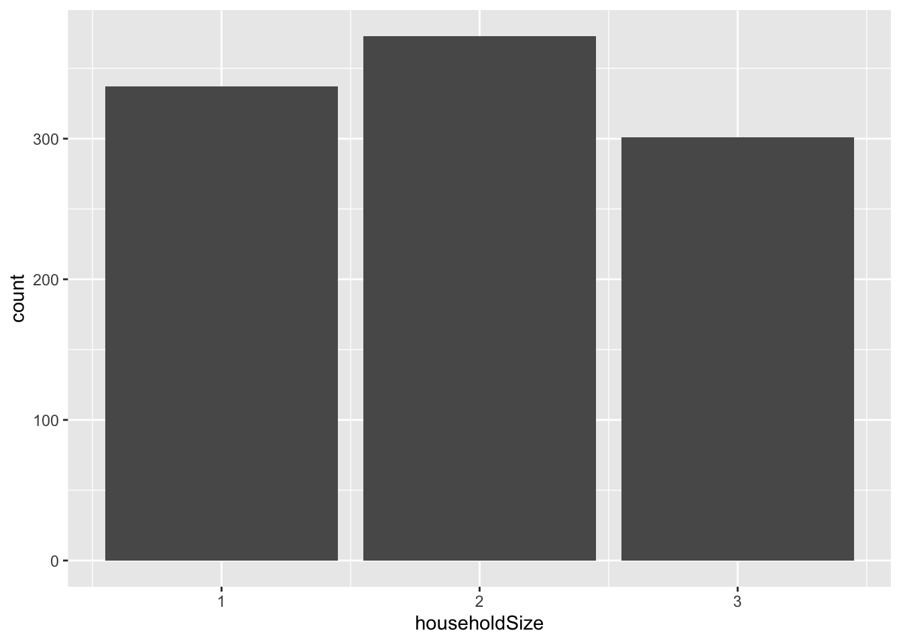

Hide the code
pacman::p_load(ggiraph, plotly, patchwork, DT, tidyverse) Visual Analytics of the demographic and financial characteristics of residents in City of Engagement
City of Engagement, with a total population of 50,000, is a small city located at Country of Nowhere. The city serves as a service centre of an agriculture region surrounding the city. The main agriculture of the region is fruit farms and vineyards. The local council of the city is in the process of preparing the Local Plan 2023. A sample survey of 1000 representative residents had been conducted to collect data related to their household demographic and spending patterns, among other things. The city aims to use the data to assist with their major community revitalization efforts, including how to allocate a very large city renewal grant they have recently received.
In this take-home exercise, you are required to apply the concepts and methods you had learned in Lesson 1-4 to reveal the demographic and financial characteristics of the city of Engagement, using appropriate static and interactive statistical graphics methods.
Using p_load() of pacman package to load the required libraries
pacman::p_load(ggiraph, plotly, patchwork, DT, tidyverse) participants <- read_csv("data/Participants.csv")
financial_journal <- read_csv("data/FinancialJournal.csv")Participants
head(participants)# A tibble: 6 × 7
participantId householdSize haveKids age educationLevel interestGroup
<dbl> <dbl> <lgl> <dbl> <chr> <chr>
1 0 3 TRUE 36 HighSchoolOrCollege H
2 1 3 TRUE 25 HighSchoolOrCollege B
3 2 3 TRUE 35 HighSchoolOrCollege A
4 3 3 TRUE 21 HighSchoolOrCollege I
5 4 3 TRUE 43 Bachelors H
6 5 3 TRUE 32 HighSchoolOrCollege D
# ℹ 1 more variable: joviality <dbl>Financial Journal
head(financial_journal)# A tibble: 6 × 4
participantId timestamp category amount
<dbl> <dttm> <chr> <dbl>
1 0 2022-03-01 00:00:00 Wage 2473.
2 0 2022-03-01 00:00:00 Shelter -555.
3 0 2022-03-01 00:00:00 Education -38.0
4 1 2022-03-01 00:00:00 Wage 2047.
5 1 2022-03-01 00:00:00 Shelter -555.
6 1 2022-03-01 00:00:00 Education -38.0As seen from the two data tables, there are inaccurate data types. Code with mutate from dplyr to reformat participantID from dbl to chr. groupby participantID remove duplicates reformat timestamp to year and month create new variables for income, expenses, cashflow
The function distinct() [dplyr package] can be used to keep only unique/distinct rows from a data frame.
#change data type of participantID from dbl to char
participants %>%
mutate(participantId = as.character(participantId))# A tibble: 1,011 × 7
participantId householdSize haveKids age educationLevel interestGroup
<chr> <dbl> <lgl> <dbl> <chr> <chr>
1 0 3 TRUE 36 HighSchoolOrCollege H
2 1 3 TRUE 25 HighSchoolOrCollege B
3 2 3 TRUE 35 HighSchoolOrCollege A
4 3 3 TRUE 21 HighSchoolOrCollege I
5 4 3 TRUE 43 Bachelors H
6 5 3 TRUE 32 HighSchoolOrCollege D
7 6 3 TRUE 26 HighSchoolOrCollege I
8 7 3 TRUE 27 Bachelors A
9 8 3 TRUE 20 Bachelors G
10 9 3 TRUE 35 Bachelors D
# ℹ 1,001 more rows
# ℹ 1 more variable: joviality <dbl>financial_journal %>%
mutate(participantId = as.character(participantId))# A tibble: 1,513,636 × 4
participantId timestamp category amount
<chr> <dttm> <chr> <dbl>
1 0 2022-03-01 00:00:00 Wage 2473.
2 0 2022-03-01 00:00:00 Shelter -555.
3 0 2022-03-01 00:00:00 Education -38.0
4 1 2022-03-01 00:00:00 Wage 2047.
5 1 2022-03-01 00:00:00 Shelter -555.
6 1 2022-03-01 00:00:00 Education -38.0
7 2 2022-03-01 00:00:00 Wage 2437.
8 2 2022-03-01 00:00:00 Shelter -557.
9 2 2022-03-01 00:00:00 Education -12.8
10 3 2022-03-01 00:00:00 Wage 2367.
# ℹ 1,513,626 more rows#change data type of EducationID from nominal to ordinal
participants$educationLevel_factor <- factor(participants$educationLevel, order = TRUE,
levels = c("Low", "Graduate", "Bachelors","HighSchool0orCollege"))unique(financial_journal$category)[1] "Wage" "Shelter" "Education" "RentAdjustment"
[5] "Food" "Recreation" You can use group_by() function along with the summarise() from dplyr package to find the group by sum in R DataFrame, group_by() returns the grouped_df ( A grouped Data Frame) and use summarise() on grouped df results to get the group by sum.
#store new dataset in variable -> financial_journal_clean
financial_journal_clean <- financial_journal |>
#reformat timestamp to Year and Month
mutate(year = as.character(format(as.Date(paste(financial_journal$timestamp, "-01", sep="")), "%Y")),
month = as.character(format(as.Date(paste(financial_journal$timestamp, "-01", sep="")), "%m")),
.before = 3)
#create new variables called
financial_journal_clean# A tibble: 1,513,636 × 6
participantId timestamp year month category amount
<dbl> <dttm> <chr> <chr> <chr> <dbl>
1 0 2022-03-01 00:00:00 2022 03 Wage 2473.
2 0 2022-03-01 00:00:00 2022 03 Shelter -555.
3 0 2022-03-01 00:00:00 2022 03 Education -38.0
4 1 2022-03-01 00:00:00 2022 03 Wage 2047.
5 1 2022-03-01 00:00:00 2022 03 Shelter -555.
6 1 2022-03-01 00:00:00 2022 03 Education -38.0
7 2 2022-03-01 00:00:00 2022 03 Wage 2437.
8 2 2022-03-01 00:00:00 2022 03 Shelter -557.
9 2 2022-03-01 00:00:00 2022 03 Education -12.8
10 3 2022-03-01 00:00:00 2022 03 Wage 2367.
# ℹ 1,513,626 more rowsThe function distinct() [dplyr package] can be used to keep only unique/distinct rows from a data frame. If there are duplicate rows, only the first row is preserved.
financial_journal_clean %>% distinct()# A tibble: 1,512,523 × 6
participantId timestamp year month category amount
<dbl> <dttm> <chr> <chr> <chr> <dbl>
1 0 2022-03-01 00:00:00 2022 03 Wage 2473.
2 0 2022-03-01 00:00:00 2022 03 Shelter -555.
3 0 2022-03-01 00:00:00 2022 03 Education -38.0
4 1 2022-03-01 00:00:00 2022 03 Wage 2047.
5 1 2022-03-01 00:00:00 2022 03 Shelter -555.
6 1 2022-03-01 00:00:00 2022 03 Education -38.0
7 2 2022-03-01 00:00:00 2022 03 Wage 2437.
8 2 2022-03-01 00:00:00 2022 03 Shelter -557.
9 2 2022-03-01 00:00:00 2022 03 Education -12.8
10 3 2022-03-01 00:00:00 2022 03 Wage 2367.
# ℹ 1,512,513 more rowsCheck for missing values
#Check for missing values
any(is.na(participants))[1] TRUEp1 <- ggplot(data=participants,
aes(x = householdSize)) +
geom_bar()
p1